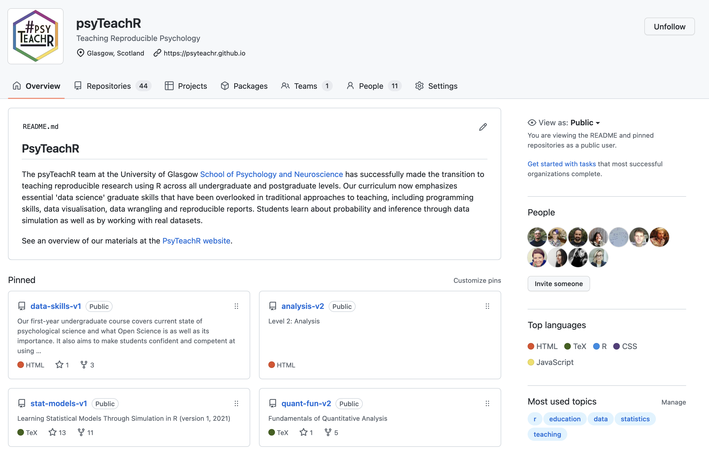
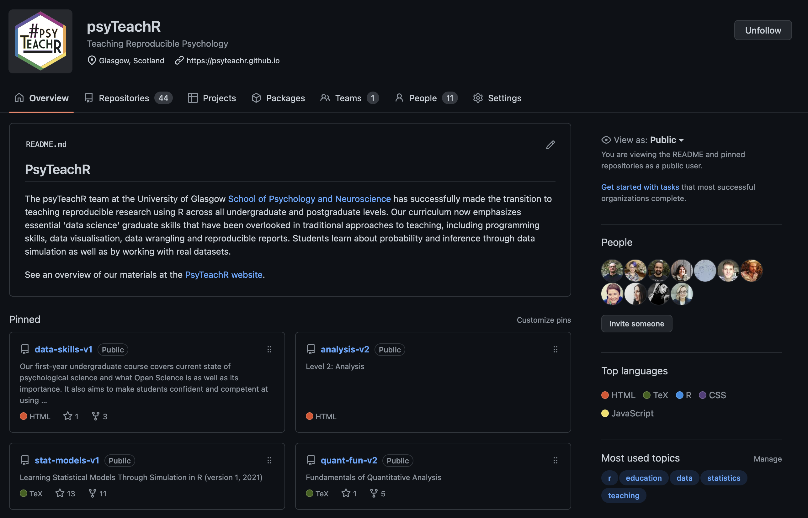

5 Website
First, take a look at some existing big team science websites and see what type of information you want to include in your site. If it’s still early in your organisation, you may not have as complex a structure as some of these.
5.1 Sections
Most big team science organisation websites will have at least the following sections.
5.1.1 Purpose/Vision
Let people know what the purpose of your group is. What specific problems or questions are you tackling?
5.1.2 How to Join
Make it easy for people to figure out how to join you.
5.1.3 Members
Who are your members? What are their interests? Where do they come from and what sort of expertise do they have?
Some blog formats like Wordpress or Hugo can create a membership page automatically, as long as you add each member’s data in a specific way. It’s worth thinking about this page when you’re designing your membership forms.
5.1.4 Activities
What activities is your group engaged in? At the start, you probably won’t have much more than plans, but think about structuring your website so that it will be easy to add in new projects and outputs.
5.2 Accessibility
Accessibility is very important for a website. Make sure that you’re adding descriptive alt text to any images and using web templates that have a semantic structure for screen readers. The options described below are generally good for accessibility.
5.3 Construction
There are many, many ways to create a website, but I’ll assume if you’re looking at this guide, you don’t have a lot of experience. The options below are fairly straightforward ways to create an organisation’s website.
5.3.1 Jeckyll
ManyBabies has a website powered by BeautifulJeckyll and hosted on GitHub Pages. If you have a github account, it’s very easy to set up the default and start tinkering.
5.3.2 Hugo
Hugo is an open-source website generator. If you have experience with R, you can make a Hugo website using Quarto or Blogdown.
Hugo has a lot of themes for websites. Academic is a popular theme with multilingual support. Hugo sites are good if you want to host a blog and take advantage of features that track post topics and engagement.
5.3.3 WordPress
The PSA’s website is made with WordPress. This option requires no coding experience and is easier for multiple people to manage. There are many themes for customising your site.
One downside is that this type of dynamic website can be more complex to host, but you can start with free hosting at WordPress.com.
5.4 Hosts
Your website needs to be hosted somewhere. GitHub Pages and Netlify are two of the best free options. Both allow you to use a custom domain name or a domain name like myteam.github.io or myteam.netlify.com.
5.4.1 Github Pages
It’s very straightforward to host a static website for free using GitHub Pages. You need to have set up a GitHub organisation as described in Section 4.5 and create a repository called yourorgname.github.io for the web files.
One nice thing about GitHub Pages is that each project can have its own repository and a website in a subsection of the main website. For example, PsyTeachR has a main site at https://psyteachr.github.io/, but each book (e.g., Applied Data Skills or Statistical Models) has its own repository and separate team of authors.


5.4.2 Netlify
Netlify can host a webpage and also has quick-start templates for setting up a websites using Hugo or other types of templates.
5.5 Domain Name
It’s a good idea to register a domain name for your group, but don’t get suckered into buying an expensive .com name. Go to Google Domains (or your favourite domain registrar) and type in the name you’re using for social media. They will show you all of the domain endings that are available for that name and their prices. The .info domain is usually about £10 per year, but there are hundreds of options (.tires is bizarrely expensive).